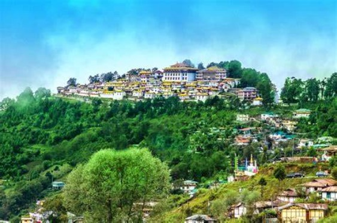

Situated in the Changlang district, Namdapha National Park is the largest protected area in the Eastern Himalaya biodiversity hotspot. It is home to a wide range of flora and fauna, including rare and endangered species such as the snow leopard, clouded leopard, and Hoolock Gibbon. Dapha Bum is the highest peak in Namdapha National Park, towering at an elevation of 4,615 meters. It offers stunning panoramic views of the surrounding landscapes and is a challenging trekking destination for adventurous travelers.
Ziro Valley, located in the Lower Subansiri district, is famous for its scenic beauty, lush greenery, and vibrant tribal culture. It is home to the Apatani tribe, known for their unique farming techniques and traditional way of life. Ziro is also known for hosting the Ziro Music Festival, a popular event showcasing indie music.The Ziro Music Festival, held annually in September, is a major cultural event that attracts music lovers from around the world. It showcases indie music artists against the backdrop of the stunning Ziro landscape, making it a unique and memorable experience.
Tawang

Tawang is a picturesque town situated in the western part of Arunachal Pradesh, renowned for its stunning landscapes, ancient monasteries, and Tibetan Buddhist culture. The Tawang Monastery, one of the largest monasteries in India, is a major attraction here.The monastery, founded in the 17th century, is a center of Tibetan Buddhist culture and houses valuable artifacts, manuscripts, and thangkas (religious paintings).